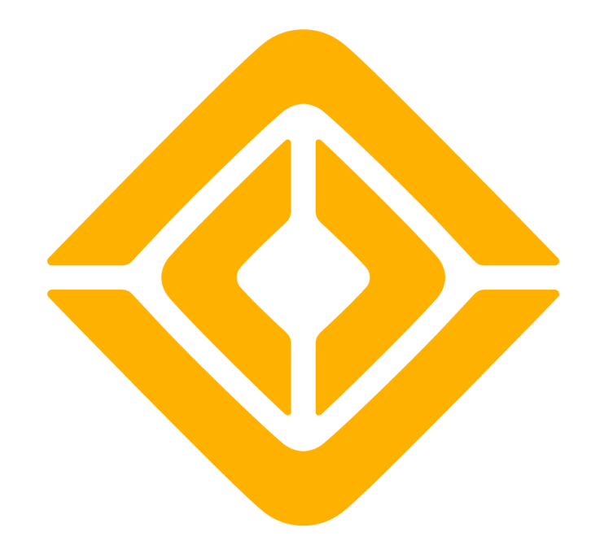

Vehicle Controls
Steer-by-wire · Brake-by-wire
Torque vectoring
Suspension controls
Systems Test & Integration Engineer
Rivian Volkswagen Group Technologies · Vehicle Motion / Propulsion Controls · Irvine, CA
M.S. Automotive Engineering, Clemson University
6+ years connecting control software, ECUs and vehicle behavior.
Steer-by-wire · Brake-by-wire
Torque vectoring
Suspension controls
ECU bring-up · Interfaces
Diagnostics
MIL · SIL · HIL
Vehicle testing
Feature validation · Regression
OTA releases
From software releases to steering, braking and driver displays, each project began with a different challenge. Explore how the work moved from an engineering problem to integration and validation.

Rivian Volkswagen Group Technologies · Vehicle Motion / Propulsion Controls · Irvine, CA
Own feature-level and regression validation for vehicle motion and propulsion control software across R1 and EDV platforms, supporting OTA releases, merge releases, and supplier ECU firmware updates.
Ford Motor Company · Research & Advanced Engineering · Dearborn, MI
Led deployment and real-time validation of a dual-redundant steer-by-wire platform from concept through integration, executing MIL, HIL, and proving-ground verification for motion-control functionality and robustness.
Clemson University · Deep Orange 16 · Greenville, SC
Developed physics-based vehicle dynamics control strategies and validation workflows for a high-voltage 4-wheel hub-motor vehicle platform.
Royal Enfield · Chennai, India
Managed chassis systems integration and verification activities across motorcycle platforms, with focus on ABS calibration, validation planning, and design issue resolution.
Motion-control systems and chassis validation.
Model-based control development and validation.
Automation, post-processing, and validation tooling.
Vehicle communication and ECU diagnostics.
Measurement, calibration, and trace-analysis workflows.
Release validation and systems engineering workflows.
Convert control requirements into measurable validation plans.
Break down vehicle control requirements into verification steps, pass/fail criteria, test cases, and release-readiness evidence.
Validate controls from simulation to vehicle-level testing.
Validate behavior across MIL, SIL, HIL, Dyno HIL, and vehicle environments to connect simulation results with real system behavior.
Verify vehicle networks, diagnostics, and ECU interfaces.
Review CAN/LIN/UDS/Ethernet traces, validate signal behavior, check timeouts, and debug ECU interface issues.
Support SDV releases through repeatable validation workflows.
Support OTA and merge releases through regression testing, defect triage, supplier ECU validation, quality metrics, and sign-off.
Validate degraded modes and safety-critical system responses.
Map fault scenarios to expected system behavior, recovery logic, degraded modes, and fail-safe responses.
Use logs, traces, telemetry, and calibration data to isolate issues.
Analyze logs, diagnostic traces, telemetry, calibration data, and vehicle response to collaborate across controls, software, and supplier teams.
Clemson University · International Center for Automotive Research
Concentration in Vehicle Dynamics & Controls, with graduate work focused on vehicle motion control, state estimation, model-based validation, HIL testing, and automotive systems integration.
SSN College of Engineering · Chennai, Tamil Nadu, India
Undergraduate foundation in mechanical engineering, dynamics, design, manufacturing, thermal systems, materials, and core engineering analysis.